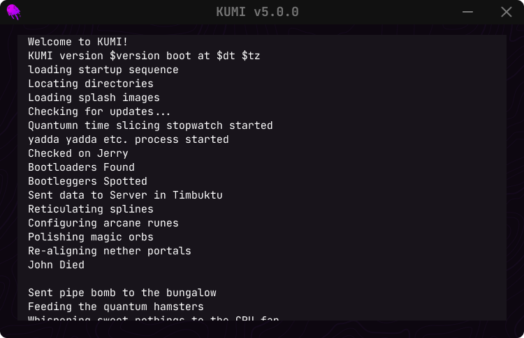
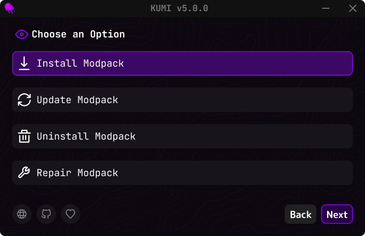

Guided install workflow
A consistent flow that adapts per launcher and target.
Keehan’s universal modpack installer
PolyForge streamlines modpack installs across Minecraft launchers with clean placement, predictable results, and a workflow designed for repeatable installs and updates.
What PolyForge does today, plus what’s coming next.
A consistent flow that adapts per launcher and target.
Readable progress events for installs, errors, and diagnostics.
One installer surface across multiple launcher ecosystems.
High-impact features that push PolyForge past “just an installer.”
Optional post-install report for troubleshooting: what changed and what failed.
Expanded path heuristics for Linux/macOS and portable installs.
Keys for access control, analytics, and gated distribution (optional).
Let users assemble packs from supported sources and export/share them.
Private packs for teams, events, or communities with controlled access.
Optional updater for PolyForge itself with safe rollback support.
Hash verification and optional signed manifests to prevent tampering.
One-click backups of configs, saves, and profiles before updates.
Update packs without re-downloading everything when only a few files change.
The internal tools that make installs reliable.
UI snapshots from the installer flow.




Filter by support level to see what’s ready vs. what’s next.
A clean overview of what’s powering PolyForge.
Download the installer and you’re done — no setup required.